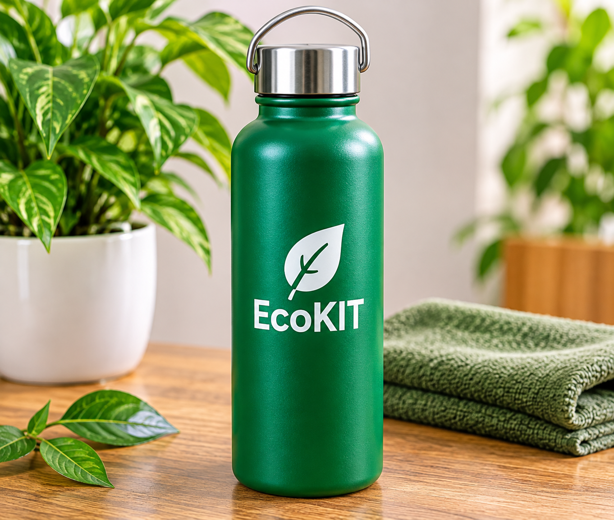

4 productos en un solo kit
¿Qué contiene el EcoKit Universitario?
Una solución integral diseñada para acompañar tus actividades académicas diarias.
01

Botella Reutilizable (S/ 10.00)
Duradera, ergonómica y libre de BPA para mantenerte hidratado.
02

Bolsa de Tela Ecológica (S/ 4.00)
Resistente y compacta, ideal para transportar tus materiales.
03

Cubiertos Reutilizables (S/ 3.00)
Set portátil de acero inoxidable para el comedor universitario.
04

Guía Digital Interactiva (S/ 2.00)
Acceso mediante código QR con manuales y consejos de segregación.
Precio Propuesto del Kit:
S/ 29.00
Margen unitario: S/ 10.00
¿Cómo se compone el precio?
Botella S/ 10.00
Bolsa S/ 4.00
Cubiertos S/ 3.00
Guía S/ 2.00
Margen S/ 10.00